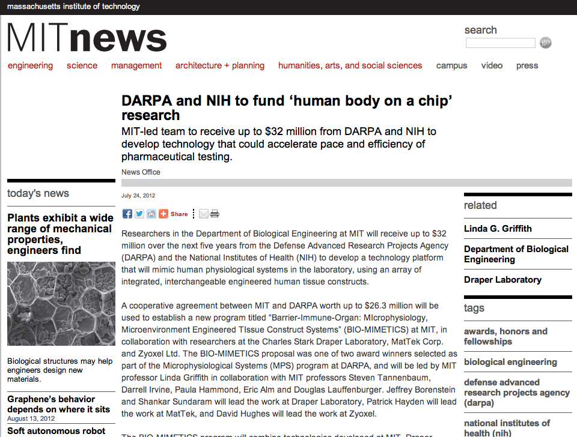

DARPA and NIH to fund 'human body on a chip' research
Original source:
MIT News
July 24, 2012
MIT-led team to receive up to $32 million from DARPA and NIH to develop
technology that could accelerate pace and efficiency of pharmaceutical testing.
Researchers in the Department of Biological Engineering at MIT will receive up
to $32 million over the next five years from the Defense Advanced Research
Projects Agency (DARPA) and the National Institutes of Health (NIH) to develop a
technology platform that will mimic human physiological systems in the
laboratory, using an array of integrated, interchangeable engineered human
tissue constructs.
A cooperative agreement between MIT
and DARPA worth up to $26.3 million will be used to establish a new program
titled "Barrier-Immune- Organ: MIcrophysiology, Microenvironment Engineered
Tissue Construct Systems" (BIO-MIMETICS) at MIT, in collaboration with
researchers at the Charles Stark Draper Laboratory, MatTekCorp. and Zyoxel Ltd.
The BIO-MIMETICS proposal was one of two award winners selected as part of the
Microphysiological Systems (MPS) program at DARPA, and will be led by MIT
professor Linda Griffith in collaboration with MIT professors Steven Tannenbaum,
Darrell Irvine, Paula Hammond, Eric Alm and Douglas Lauffenburger. Jeffrey
Borenstein and Shankar Sundaram will lead the work at Draper Laboratory, Patrick
Hayden will lead the work at MatTek, and David Hughes will lead the work at
Zyoxel.
The BIO-MIMETICS program will combine technologies developed at MIT, Draper
Laboratory, MatTek and Zyoxel to create a versatile microfluidic platform that
can incorporate up to 10 individual engineered human microphysiological organ
system modules in an interacting circuit. The modules will be designed to mimic
the functions of specific organ systems representing a broad spectrum of human
tissues, including the circulatory, endocrine, gastrointestinal, immune,
integumentary, musculoskeletal, nervous, reproductive, respiratory and urinary
systems. The goal of the program is to create a versatile platform capable of
accurately predicting drug and vaccine efficacy, toxicity, and pharmacokinetics
in preclinical testing. The BIO-MIMETICS team anticipates that the platform will
be suitable for use in regulatory review, amenable to rapid translation to the
biopharmaceutical research community, and adaptable for integration of future
technologies (such as advances in stem cell technologies and personalized
medicine).
A cooperative agreement worth up to $6.25 million from the National Center for
Advancing Translational Sciences (NCATS) at NIH will support a complementary
research initiative at MIT and Draper Laboratory, in collaboration with
professors Alan Wells, Donna Stolz and Raman Venkataramanan at the University of
Pittsburgh. The aim of this project is to model cancer metastasis therapies
using engineered human tissue constructs, with a goal of adapting this work to
the integrated BIO-MIMETICS platform.